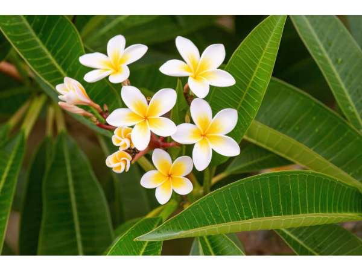

Plumeria alba
Common Names: White Frangipani, White Plumeria, Temple Flower, Pagoda Tree
Local Name: Perungalli / Arali (Tamil), Champa (Hindi), Chempakam (Malayalam)
Family: Apocynaceae
Origin: Puerto Rico and Lesser Antilles
Plant Type: Deciduous tropical tree or large shrub
Average Lifespan: 50–100 years
| Growth Habit | Spreading, multi-branched deciduous tree; branches thick and succulent |
| Plant Size | 3–8 meters tall; spreading canopy |
| Leaves | Long, narrow, lanceolate, 20–40 cm; clustered at branch tips; shed in dry season |
| Flowers | Pure white with yellow center, 5-petaled, 5–7 cm diameter; intensely fragrant; borne in clusters at branch tips |
| Flower Characteristics | Blooms prolifically; fragrance strongest at night; flowers used in garlands and temple offerings |
| Root System | Fibrous, moderately deep; drought-tolerant once established |
| Climate | Tropical and subtropical; drought-tolerant |
| Temperature Range | 18–40°C; frost-sensitive |
| Rainfall Requirement | 600–1500 mm; tolerates dry periods; goes dormant in dry season |
| Soil Type | Well-drained sandy loam; cannot tolerate waterlogging |
| Soil pH Preference | 6.0–7.5 |
| Sun Requirement | Full sun (6+ hours); essential for prolific flowering |
| Spacing | 3–5 meters between trees |
| Water Requirement | Low; drought-tolerant; reduce watering in winter |
| Can it Grow in Pots? | Yes, in large containers; popular as patio tree |
| Fertilizer Schedule | Monthly during growing season; high phosphorus to promote flowering |
| Recommended Organic Fertilizers | Bone meal, compost, banana peel compost for potassium |
| Pesticide Frequency | As needed; monitor for rust fungus |
| Recommended Organic Pesticides | Neem oil for mealybugs; copper fungicide for rust |
| Mulching Practice | Light mulch around base; avoid mulch touching trunk |
| Common Pests | Mealybugs, scale insects, frangipani caterpillar (Pseudosphinx tetrio) |
| Common Diseases | Frangipani rust (Coleosporium plumeriae), stem rot, tip dieback |
| Disease Prevention & Remedies | Good air circulation; avoid overhead watering; remove infected leaves |
| Flowering Months | March–November in India; peak in summer; nearly year-round in tropical climates |
| Pollination Type | Moth and hawkmoth pollinated; flowers are deceptive (no nectar) |
| Pollination Notes | Fragrance attracts moths at night; flowers produce no nectar — pollinators are deceived |
| Propagation by Cuttings | Stem cuttings 30–45 cm; allow to dry 1–2 weeks before planting in dry sand; roots in 4–6 weeks |
| Propagation by Seeds | Seeds germinate in 1–2 weeks; seedlings take 3–5 years to flower |
| Water Usage | Very low; ideal for water-wise tropical gardens |
| Biodiversity Benefits | Attracts moths and hawkmoths; provides shade and habitat |
| Commercial Production Regions | India, Thailand, Indonesia, Hawaii; widely cultivated in tropical Asia |
| Market Uses | Temple flower garlands, perfumery, ornamental landscaping, lei making |
| Market Value (Approx.) | ₹50–200 per bunch of flowers; ₹300–1,000 per plant |
| Symbolism | Sacred flower in Hindu and Buddhist traditions; offered to deities; national flower of Laos (dok champa) |
| Traditional Uses | Flowers used in temple offerings and garlands; bark and latex used in traditional medicine; widely planted near temples and cremation grounds across Asia |
Add your field observations here.